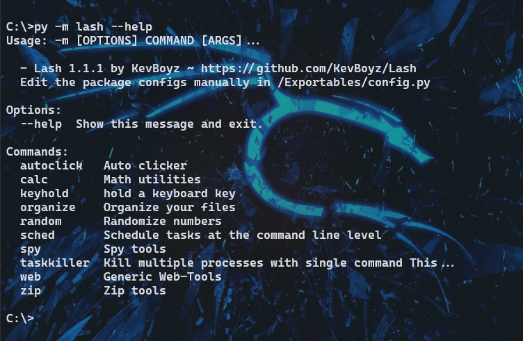

🛠 Lash Documentation v1.1.1 - Python package
written in 04/09/21 by KevBoyz Lash is a cli package developed in Python, he provides a set of desktop tools that simplify and automate repetitive processes. Lash also has utility functions that cover some needs of desktop users, like files encryptation or keylogger. Lash is actually available on Pypi and Github.
The tool have all commands documenteted with auto-help sections that can be viewd using the --help option, this article shows more datails and usages for commands.